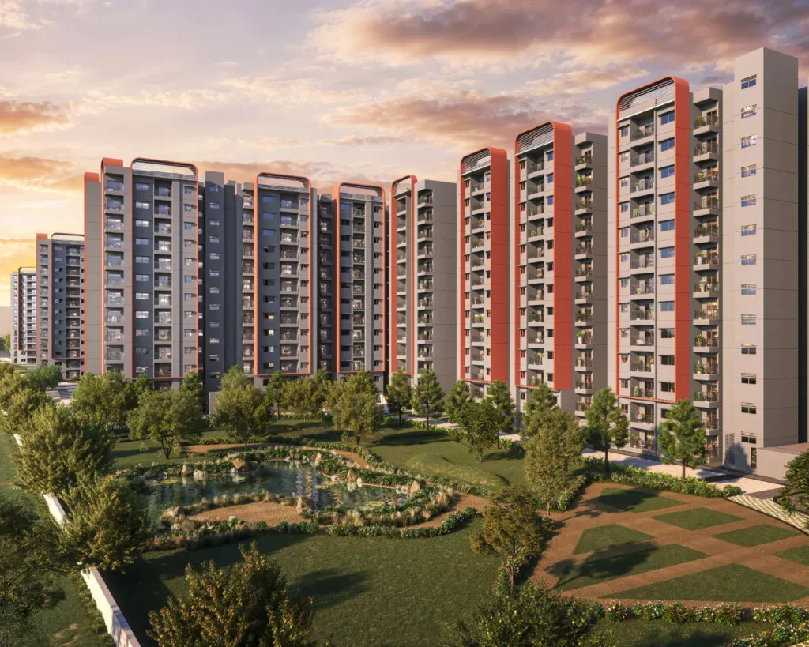

TVS Emerald Housing & Estates, the residential arm of the TVS Group, has had a busy 2026 on the corporate side of its business. In late January, the developer raised about Rs 425 crore in equity from the International Finance Corporation (IFC), the private-sector investment arm of the World Bank Group, earmarked for upcoming housing projects in Bengaluru and Chennai with a combined revenue potential of roughly Rs 4,400 crore. A few weeks later, in February, the company added three fresh land parcels across both cities, unlocking about 2.39 million sq ft of additional saleable potential, including a 37.4-acre plotted development in Kattur, Chennai. By August, TVS Emerald Altura, the brand's high-rise launch in Sathanur on Bagalur Main Road, North Bangalore, had reportedly crossed Rs 650 crore in launch-day bookings. None of these are small, isolated announcements; taken together, they describe a developer that spent 2026 building both its balance sheet and its land bank at the same time it was selling a new project in North Bangalore. For anyone currently evaluating TVS Emerald Altura, that combination of institutional funding and strong launch-day demand is worth unpacking carefully, because it answers a different question than the project's own price list does.
1. What Actually Happened in 2026
Three separate pieces of news, spread across the year, add up to a fuller picture of TVS Emerald's position. The IFC round, reported by Business Standard and Angel One around January 22, 2026, was structured as equity rather than debt, which is a meaningfully different signal than a construction loan: equity investors typically do more due diligence on a developer's execution track record and governance before committing capital, and the money does not carry a fixed repayment schedule that could pressure the company into premature sales or corner-cutting. The land acquisitions that followed in February, covered by Realty+ and Construction World, added to the company's pipeline in both its home Chennai market and its newer Bengaluru push, with the Kattur plotted development in Chennai being the single largest parcel in that round. By August, press coverage of the TVS Emerald Altura launch event put bookings above Rs 650 crore, a figure that, if accurate, represents a strong initial absorption rate for a 975-unit project.
It's worth being precise about what connects these three events and what doesn't. TVS Emerald's own public statements around the IFC funding and the February land deals describe "upcoming" Bengaluru and Chennai projects in general terms; they do not specifically name Altura as a beneficiary of the IFC capital, since Altura had already been positioned as the brand's Sathanur entry before the funding round closed. The accurate way to read this is not "IFC money built Altura," but rather "the same company that is building and selling Altura also just strengthened its balance sheet and expanded its land bank elsewhere," which is a reasonable, if indirect, signal of financial depth behind the brand a buyer is transacting with.
2. Why a Developer's Financial Health Matters to an Altura Buyer
A home purchase in an under-construction project is, among other things, a multi-year bet on the seller's ability to keep building. TVS Emerald Altura is still under construction, with possession reported as March 2033 across all phases, and its advertised 10:90 payment plan asks buyers for 85% of the price by July 15, 2028, years before handover. That structure means a buyer's money is exposed to the developer's execution capacity for a long stretch, which is exactly the kind of risk that institutional equity funding and a healthy, growing land bank help offset.
- Equity funding reduces reliance on buyer collections to fund construction. A developer that can draw on institutional capital, rather than depending entirely on advance payments from homebuyers to fund ongoing work, is generally in a better position to keep multiple projects moving in parallel without diverting cash from one site to prop up another.
- Land acquisitions signal the company intends to keep operating in these markets, not exit them. A developer adding Bengaluru and Chennai land in the same year it is selling an existing North Bangalore project is a different posture than a developer quietly scaling back a city it entered recently.
- Strong launch absorption is a demand signal, not a construction guarantee. Rs 650 crore in reported bookings tells you the market responded to Altura's price and positioning; it does not, on its own, tell you anything about the pace of construction on site. Buyers should still track physical progress independently rather than treating booking numbers as a proxy for build quality or schedule.
3. What None of This Changes About Altura Itself
None of the corporate news above changes a single fact on TVS Emerald Altura's own price list or RERA filing, and buyers should be careful not to let positive parent-company headlines substitute for project-level diligence. Per the project's own page, Altura spans 10.06 acres with 975 residences across 12 towers, offering 2 BHK Classic and Premium homes (1,103 to 1,227 sq ft) and three 3 BHK variants (1,551 to 2,133 sq ft). The developer publishes a basic price of only Rs 2.11 Cr* for the 3 BHK Classic; 2 BHK pricing remains on request, with channel partners quoting figures from roughly Rs 1.36 Cr* to Rs 1.55 Cr* that may predate the current price list. The project carries Karnataka RERA registration PRM/KA/RERA/1251/309/PR/040426/008572, which we recommend verifying independently on the Karnataka RERA portal rather than taking on trust from either the developer or this article.
A useful way to frame it: the IFC funding and land acquisitions are evidence about TVS Emerald as a company, while Altura's own RERA filing, floor plans and payment schedule are evidence about this specific project. Both matter, but they answer different questions, and a strong answer to the first does not excuse skipping the second. We've covered Altura's own pricing, layout and possession timeline in detail in our TVS Emerald Altura price, layout and RERA review.
4. The Sathanur Corridor Context
TVS Emerald's decision to add more Bengaluru land even as it sells Altura is also a vote of confidence in the Bagalur Main Road corridor more broadly, which sits within reach of Manyata Tech Park, the KIADB Aerospace Park, and Kempegowda International Airport (about 16 km by the developer's own estimate). This corridor has drawn a cluster of mid-to-large developers in recent years, from Bhartiya Urban's Nikoo Homes phases to Goyal Orchid Salisbury and Century's Immencity launches nearby, and a Tier-1 player like TVS Emerald committing further capital to the wider Bengaluru market is consistent with that broader pattern of institutional interest in North Bangalore's airport-linked corridors.
Our Take
TVS Emerald's 2026 corporate moves, an IFC equity round, fresh land in two cities, and a strongly booked launch at Altura, paint the picture of a developer in expansion mode rather than one under financial strain. That is a reasonable, supportive data point for anyone evaluating TVS Emerald Altura, but it should sit alongside, not in place of, the project-specific checks that matter for any under-construction purchase: the RERA registration, the construction-linked payment schedule, and the actual pace of work on site in Sathanur. If you are weighing a 2 BHK or 3 BHK at Altura, talk to our team for current availability and a side-by-side view against other North Bangalore launches in this price band.